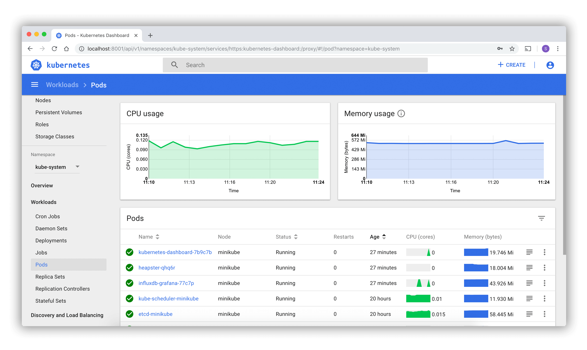
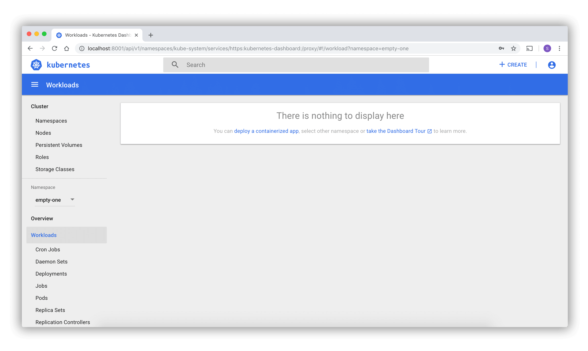
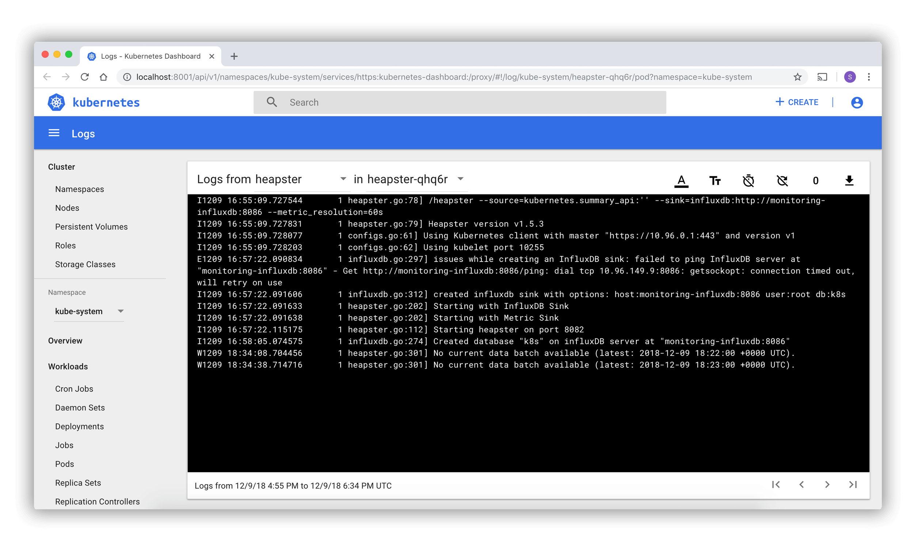

Kubernetes Dashboard is deprecated and unmaintained.
The Kubernetes Dashboard project has been archived and is no longer actively maintained. For new installations, consider using Headlamp.
Note:
For in-cluster deployments similar to Kubernetes Dashboard, see the Headlamp in-cluster installation guide.
Dashboard is a web-based Kubernetes user interface. You can use Dashboard to deploy containerized applications to a Kubernetes cluster, troubleshoot your containerized application, and manage the cluster resources. You can use Dashboard to get an overview of applications running on your cluster, as well as for creating or modifying individual Kubernetes resources (such as Deployments, Jobs, DaemonSets, etc). For example, you can scale a Deployment, initiate a rolling update, restart a pod or deploy new applications using a deploy wizard.
Dashboard also provides information on the state of Kubernetes resources in your cluster and on any errors that may have occurred.

Deploying the Dashboard UI
Note:
Kubernetes Dashboard supports only Helm-based installation currently as it is faster and gives us better control over all dependencies required by Dashboard to run.
The Dashboard UI is not deployed by default. To deploy it, run the following command:
# Add kubernetes-dashboard repository
helm repo add kubernetes-dashboard https://kubernetes.github.io/dashboard/
# Deploy a Helm Release named "kubernetes-dashboard" using the kubernetes-dashboard chart
helm upgrade --install kubernetes-dashboard kubernetes-dashboard/kubernetes-dashboard --create-namespace --namespace kubernetes-dashboardAccessing the Dashboard UI
To protect your cluster data, Dashboard deploys with a minimal RBAC configuration by default. Currently, Dashboard only supports logging in with a Bearer Token. To create a token for this demo, you can follow our guide on creating a sample user.
Warning:
The sample user created in the tutorial will have administrative privileges and is for educational purposes only.
Command line proxy
You can enable access to the Dashboard using the kubectl
command-line tool, by running the following command:
kubectl -n kubernetes-dashboard port-forward svc/kubernetes-dashboard-kong-proxy 8443:443Kubectl will make Dashboard available at https://localhost:8443.
The UI can only be accessed from the machine where the
command is executed. See kubectl port-forward --help for
more options.
Note:
The kubeconfig authentication method does not support external identity providers or X.509 certificate-based authentication.
Welcome view
When you access Dashboard on an empty cluster, you'll see the welcome
page. This page contains a link to this document as well as a button to
deploy your first application. In addition, you can view which system
applications are running by default in the kube-system namespace of your
cluster, for example the Dashboard itself.

Deploying containerized applications
Dashboard lets you create and deploy a containerized application as a Deployment and optional Service with a simple wizard. You can either manually specify application details, or upload a YAML or JSON manifest file containing application configuration.
Click the CREATE button in the upper right corner of any page to begin.
Specifying application details
The deploy wizard expects that you provide the following information:
App name (mandatory): Name for your application. A label with the name will be added to the Deployment and Service, if any, that will be deployed.
The application name must be unique within the selected Kubernetes namespace. It must start with a lowercase character, and end with a lowercase character or a number, and contain only lowercase letters, numbers and dashes (-). It is limited to 24 characters. Leading and trailing spaces are ignored.
Container image (mandatory): The URL of a public Docker container image on any registry, or a private image (commonly hosted on the Google Container Registry or Docker Hub). The container image specification must end with a colon.
Number of pods (mandatory): The target number of Pods you want your application to be deployed in. The value must be a positive integer.
A Deployment will be created to maintain the desired number of Pods across your cluster.
Service (optional): For some parts of your application (e.g. frontends) you may want to expose a Service onto an external, maybe public IP address outside of your cluster (external Service).
Note:
For external Services, you may need to open up one or more ports to do so.
Other Services that are only visible from inside the cluster are called internal Services.
Irrespective of the Service type, if you choose to create a Service and your container listens on a port (incoming), you need to specify two ports. The Service will be created mapping the port (incoming) to the target port seen by the container. This Service will route to your deployed Pods. Supported protocols are TCP and UDP. The internal DNS name for this Service will be the value you specified as application name above.
If needed, you can expand the Advanced options section where you can specify more settings:
Description: The text you enter here will be added as an annotation to the Deployment and displayed in the application's details.
Labels: Default labels to be used for your application are application name and version. You can specify additional labels to be applied to the Deployment, Service (if any), and Pods, such as release, environment, tier, partition, and release track.
Example:
release=1.0 tier=frontend environment=pod track=stableNamespace: Kubernetes supports multiple virtual clusters backed by the same physical cluster. These virtual clusters are called namespaces. They let you partition resources into logically named groups.
Dashboard offers all available namespaces in a dropdown list, and allows you to create a new namespace. The namespace name may contain a maximum of 63 alphanumeric characters and dashes (-) but can not contain capital letters. Namespace names should not consist of only numbers. If the name is set as a number, such as 10, the pod will be put in the default namespace.
In case the creation of the namespace is successful, it is selected by default. If the creation fails, the first namespace is selected.
Image Pull Secret: In case the specified Docker container image is private, it may require pull secret credentials.
Dashboard offers all available secrets in a dropdown list, and allows you to create a new secret. The secret name must follow the DNS domain name syntax, for example
new.image-pull.secret. The content of a secret must be base64-encoded and specified in a.dockercfgfile. The secret name may consist of a maximum of 253 characters.In case the creation of the image pull secret is successful, it is selected by default. If the creation fails, no secret is applied.
CPU requirement (cores) and Memory requirement (MiB): You can specify the minimum resource limits for the container. By default, Pods run with unbounded CPU and memory limits.
Run command and Run command arguments: By default, your containers run the specified Docker image's default entrypoint command. You can use the command options and arguments to override the default.
Run as privileged: This setting determines whether processes in privileged containers are equivalent to processes running as root on the host. Privileged containers can make use of capabilities like manipulating the network stack and accessing devices.
Environment variables: Kubernetes exposes Services through environment variables. You can compose environment variable or pass arguments to your commands using the values of environment variables. They can be used in applications to find a Service. Values can reference other variables using the
$(VAR_NAME)syntax.
Uploading a YAML or JSON file
Kubernetes supports declarative configuration. In this style, all configuration is stored in manifests (YAML or JSON configuration files). The manifests use Kubernetes API resource schemas.
As an alternative to specifying application details in the deploy wizard, you can define your application in one or more manifests, and upload the files using Dashboard.
Using Dashboard
Following sections describe views of the Kubernetes Dashboard UI; what they provide and how can they be used.
Navigation
When there are Kubernetes objects defined in the cluster, Dashboard shows them in the initial view. By default only objects from the default namespace are shown and this can be changed using the namespace selector located in the navigation menu.
Dashboard shows most Kubernetes object kinds and groups them in a few menu categories.
Admin overview
For cluster and namespace administrators, Dashboard lists Nodes, Namespaces and PersistentVolumes and has detail views for them. Node list view contains CPU and memory usage metrics aggregated across all Nodes. The details view shows the metrics for a Node, its specification, status, allocated resources, events and pods running on the node.
Workloads
Shows all applications running in the selected namespace. The view lists applications by workload kind (for example: Deployments, ReplicaSets, StatefulSets). Each workload kind can be viewed separately. The lists summarize actionable information about the workloads, such as the number of ready pods for a ReplicaSet or current memory usage for a Pod.
Detail views for workloads show status and specification information and surface relationships between objects. For example, Pods that ReplicaSet is controlling or new ReplicaSets and HorizontalPodAutoscalers for Deployments.
Services
Shows Kubernetes resources that allow for exposing services to external world and discovering them within a cluster. For that reason, Service and Ingress views show Pods targeted by them, internal endpoints for cluster connections and external endpoints for external users.
Storage
Storage view shows PersistentVolumeClaim resources which are used by applications for storing data.
ConfigMaps and Secrets
Shows all Kubernetes resources that are used for live configuration of applications running in clusters. The view allows for editing and managing config objects and displays secrets hidden by default.
Logs viewer
Pod lists and detail pages link to a logs viewer that is built into Dashboard. The viewer allows for drilling down logs from containers belonging to a single Pod.

What's next
For more information, see the Kubernetes Dashboard project page.